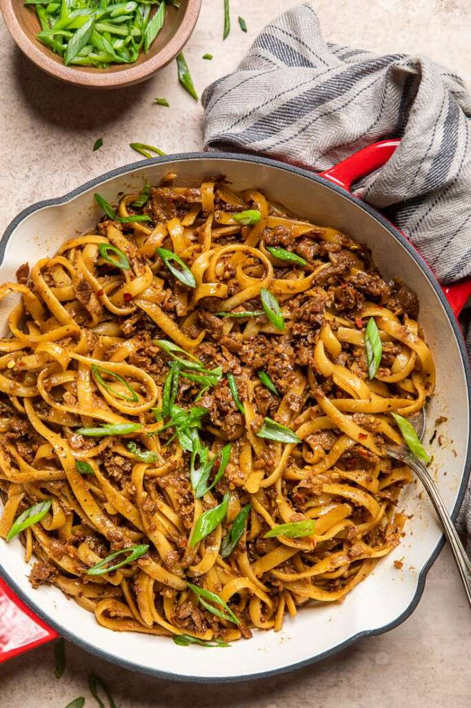

Vegan Mongolian Beed Noodles

 You will instantly fall in love with these saucy vegan Mongolian beef noodles! So simple to make, yet loaded with flavor! A quick and easy vegan dinner idea!
A skillet of vegan Mongolian beef noodles with green onions and sesame seeds.
Saucy noodles! Who doesn’t love them? These vegan Mongolian beef noodles will have you absolutely in love all over again with a new quick and easy vegan dinner idea.
It’s also budget-friendly as most noodle dishes are.
You will instantly fall in love with these saucy vegan Mongolian beef noodles! So simple to make, yet loaded with flavor! A quick and easy vegan dinner idea!
A skillet of vegan Mongolian beef noodles with green onions and sesame seeds.
Saucy noodles! Who doesn’t love them? These vegan Mongolian beef noodles will have you absolutely in love all over again with a new quick and easy vegan dinner idea.
It’s also budget-friendly as most noodle dishes are.
We made this with longer, thicker noodles, but you can use thin, long noodles
While we prefer to use a ramen style noodle for this recipe, you can make it with any pasta. Longer noodles really do well with the sauce and it creates a more classic Asian take-out style meal, but you are welcome to switch it up!
This is a great way to do take-out at home or to elevate those cheap packages of ramen (instant-noodles) that you have sitting around in your pantry!
Ingredients
- Fettucine noodles
- Cooking oil
- Vegan meatless crumbles
- Garlic
- Vegetable stock
- Soy sauce
- Brown sugar
- Hoisin sauce
- Red pepper flakes
Steps
- Bring a pot of water to a boil and cook the noodles as directed on package. Drain once finished.
- While cooking, in a large high wall skillet, over medium heat, add the oil. Once hot, cook the crumbles according to package. Use the spatula to break up the crumbles as it cooks. During the last two minutes of cooking crumbles, add the ginger and garlic, stir together.
- To the crumbles add the vegetable stock, soy sauce, brown sugar, hoisin sauce, red pepper flakes (if adding), and black pepper. Stir to combine.
- In a small bowl, combine cornstarch and water. Add it to the crumble mixture. Stir and bring the mixture to a low boil. After the sauce has thickened slightly, add the drained noodles to the skillet. Stir to combine.
- Allow the noodles to sit in the sauce for a few minutes to absorb flavor. Serve hot in bowls and garnish with green onions and sesame seeds if desired.